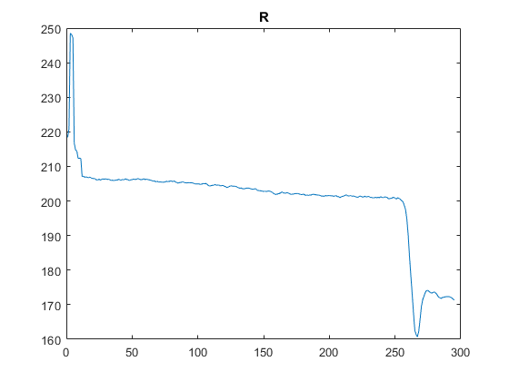
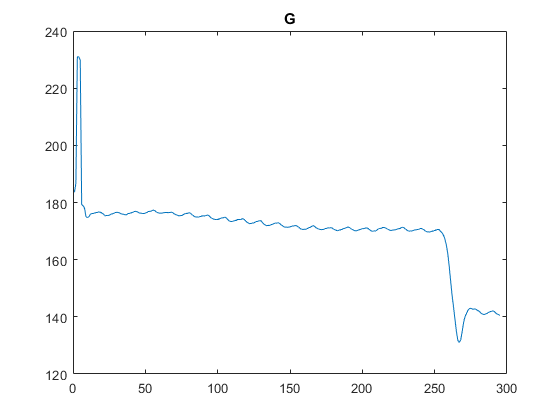
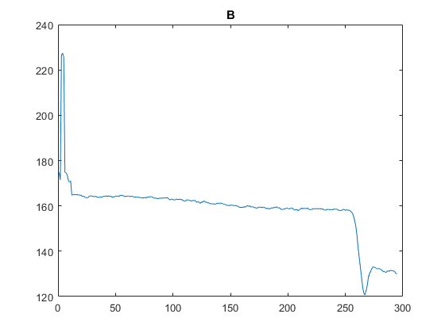
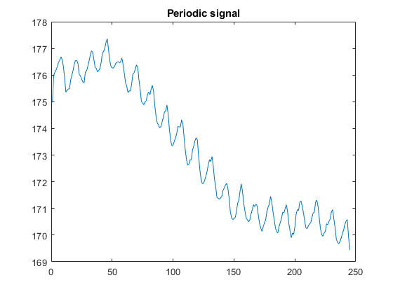
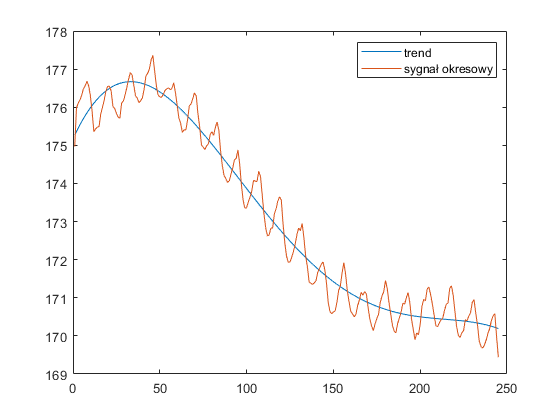
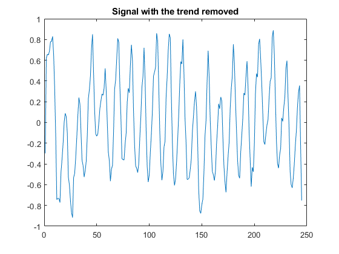
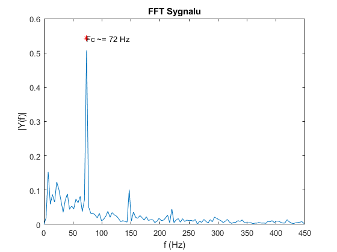

Contents
Preparation
close all;
a)
daneP = importfile('daneP.csv', 4, 298); % first way plot(daneP{:,1}); title('R'); % second way col2 = daneP{:, 2}; col3 = daneP{:, 3}; figure(2); plot(col2); title('G'); figure(3); plot(col3); title('B');  
b)
periodicSignal = col2(11:255, :);
figure(4);
plot(periodicSignal);
title('Periodic signal');
 c)
x = 1:245; y = polyval(fit.coeff, x); figure(5); plot(y); hold on; plot(periodicSignal); hold off; legend('trend', 'sygnał okresowy'); z = periodicSignal - transpose(y); figure(6); plot(z); title('Signal with the trend removed'); 
d)
przekształcenie transformaty Fouriera sygnału po odjęciu trendu
fftResids = fft(z); % przekształcenie transformaty Fouriera na sposób dający się wyświetlić w % postaci interpretowalej dla człowieka L = length(fftResids); P2 = abs(fftResids/L); P1 = P2(1:(L/2)+1); P1(2:end-1) = 2*P1(2:end-1); % częstotliwość próbkowania wzięta z pliku dane.csv Fs = 900; f = Fs*(0:(L/2))/L; % wykres figure(7); plot(f, P1); hold on plot(72.83, 0.543, "r*"); text(72.83, 0.543, "Fc ~= 72 Hz"); title('FFT Sygnalu'); xlabel('f (Hz)'); ylabel('|Y(f)|');
Warning: Integer operands are required for colon operator when used as index.